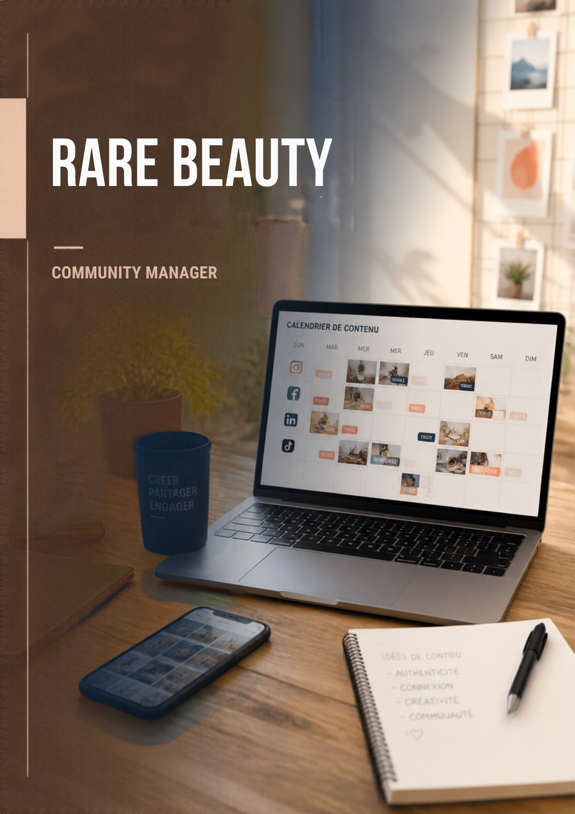
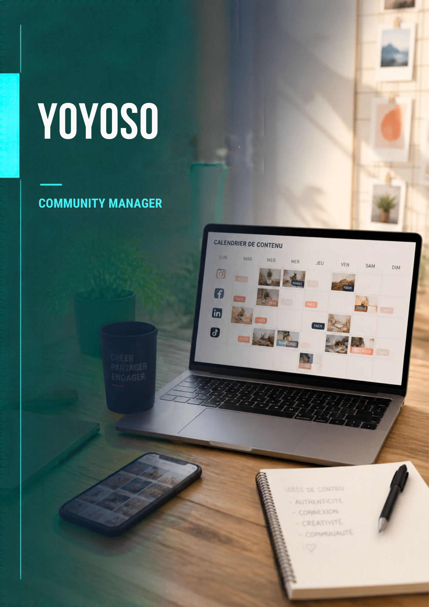
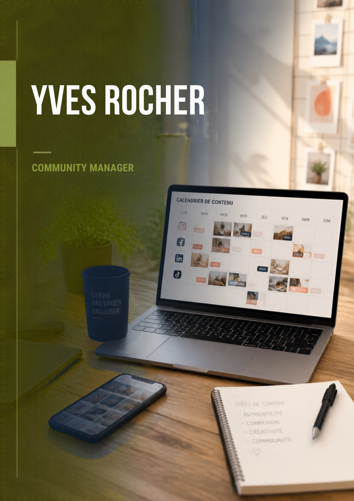

Portfolio
Mes projets
Projets d'école et projets personnels : voici ce que je sais déjà faire. Filtrez par type de contenu.

Projet perso
Contenus pour Culinarion
Voir le projet →
Projet d'école
MoodBoard RareBeauty
Voir le projet →
Projet perso
Contenus pour OzoneBio
Voir le projet →
Projet d'école
Création d'une marque : Créamoka
Voir le projet →
Projet perso
Contenu pour Yoyoso
Voir le projet →
Projet d'école
Persona : Yves Rocher
Voir le projet →Faire appel à un community manager est important pour développer la présence d’une entreprise sur les réseaux sociaux et améliorer sa visibilité. Il permet de valoriser l’image de marque, de créer du contenu adapté à sa cible et de maintenir une relation régulière avec sa communauté. Il contribue également à attirer de nouveaux clients, à fidéliser les clients existants et à faire connaître les produits ou services de l’entreprise. Une bonne gestion des réseaux sociaux permet ainsi de renforcer la notoriété et de développer l’activité de l’entreprise.
Un projet vous parle ? Je serais ravi·e d'en discuter en entretien.